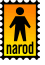

Новостя : Доскеры : Бродяги : Фотосы : Поприколу : Пиши сюда ! :
|
Don`t worry, Be Happy ! Новостя : Доскеры : Бродяги : Фотосы : Поприколу : Пиши сюда ! : |
|
ПИШИ СЮДА: Гостевая
Книга - Оставить сообщение можно в гостевой книге. Просто
заполните поля "Ваше имя..." и "Ваша запись...", а строки
"Е-mail" и "Сайт..." - при наличии у вас почтового
ящика или сайта (блога, странички и т.п.) ФОРУМ - Разные насущные вопросы и актуальные темы разбираются в форуме, чтобы не забивать гостевую книгу. Тоже самое, пишем "Ваше имя", "Тема", "Сообщение". Форум от Народ.ру богатством функций не страдает, так что разберетесь легко - там слева список сообщений и поля для создания темы, а справа пишется ответ на выбранное сообщение. Строки "Адрес (e-mail)" и "URL" заполнять при необходимости.
 А о чем собственно писать ???
НЕМНОГО ЧАВО ?
ЧАстые ВОпросы и ответы на них :) Стандартный такой раздел, в котором будут размещены часто задаваемые вопросы и ответы на них... Вопрос: А чего фотографии такие маленькие ?
Вопрос: Почему некоторых фото (картинок) не видно ? Ответ : бывает и такое :) особенно при медленном
подключении к интернету (по телефону) и/или при большом количестве
фоток на страничке. Если вместо картинки появляется маленький красный
крестик, то щелкните на месте пропавшей картинки правой кнопкой мыши
и выберите пункт "Показать рисунок". Если и после этого
картинка не появилась, то возможно на сайте ошибка, если есть возможность
- сообщите мне пожалуйста !!! Я исправлюсь :)
Вопрос: как на сайте разместить статью или фотографии? Ответ: так как всё содержание сайта делается
мною в web-редакторе и потом закачивается по ftp на сервер, то способ
один - передать мне готовые материалы (тексты, фото, рисунки и т.п.)
по электронной почте, это самый простой вариант. Просьба в ящик много
мегабайт не кидать. Если фотографий много - предварительно уменьшайте
до размеров 640х480 или 600х450 или 400х300, объем до 150 кб. В особых
случаях можно прислать полноразмерное фото.
|
Для членов социальной секты ВКонтакте.ру сообщаю :
|